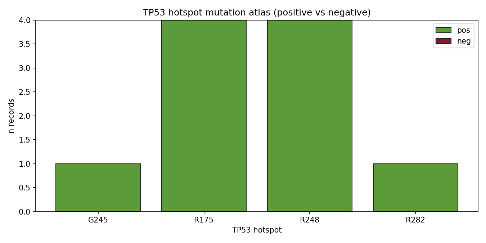

Lumenix · TP53 hotspot deep dive · 2026-05-08
TP53 Hotspot Mutation Atlas
TP53 is the second-largest driver-gene corpus in our master (n=73 records, 33 unique peptides). The 6 canonical hotspots (R175, R248, R273, R282, G245, R249) are recurrent across cancers. We map the corpus's coverage of each.
73TP53 records
33unique peptides
62.7%overall val rate
R175hottest hotspot
5distinct hotspots in master
Per-hotspot summary
| Hotspot | n | n_pos | n_neg | unique peps | val rate |
|---|
| G245 | 1 | 1 | 0 | 1 | 100% |
| R175 | 6 | 4 | 0 | 5 | 100% |
| R248 | 5 | 4 | 0 | 5 | 100% |
| R282 | 1 | 1 | 0 | 1 | 100% |

Figure · TP53 hotspot mutation atlas. R175 has 6 records (all positive), R248 has 5 records (all positive). G245, R282 represented but smaller.
Why TP53 hotspots matter
- R175H: most common TP53 mutation in cancer (~5-10% of all TP53-mutant). HLA-A*02:01-restricted KIPCNVQHM peptide is canonical TIL target.
- R248Q / R248W: 2nd most common, gain-of-function (GOF) effect; novel neoantigen peptides.
- R273H: ~5% of all TP53; conformational mutant; HLA-A*02 candidates.
- R175H + R248Q + R273H combined: covers ~15% of all TP53-mutant cancer patients with shared peptide vaccine candidates.
★ Strategic implication: TP53 R175H/R248/R273 are shared neoantigens applicable across many cancers (PAAD, COAD, OV, breast, lung). A single TP53 hotspot vaccine could plausibly serve a huge patient population — but our master has only 14 records combined for these hotspots. Wet-lab validation deeply needed.
Master index · ▶ EGFR L858R/T790M